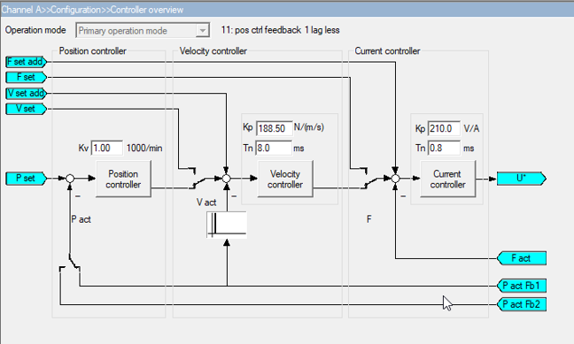
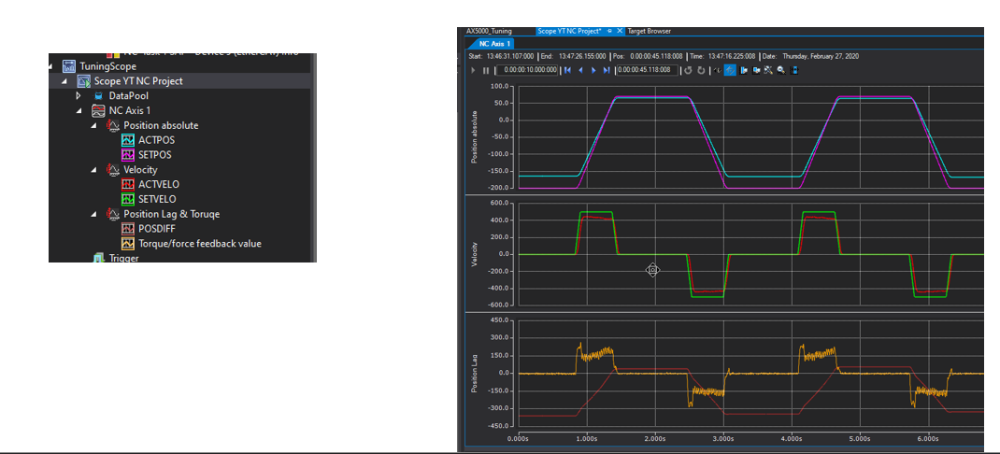
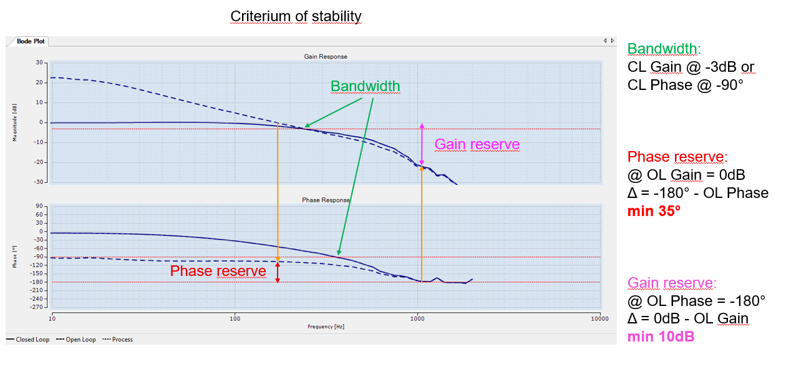

Tuning
For full documentation visit mkdocs.org.
Step Response - PID Control

N10 :G00 Y0
N20 G04 0.5
N30 Y300
N40 G04 0.5
$GOTO N10

Frequency Response - Bode Plot

-
Motion Task needs to be less than 1ms for oversampling
-
Right Click the master to add "Dyn Container"
- Set 512 Bytes
- Under TcCOM Objects -> Class Factories : Enable "TcNcObjects" and "TcBodePlot"
Auto Tuning
- Live Demo